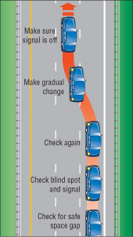
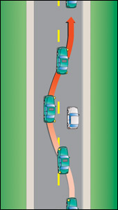
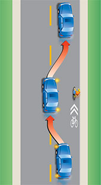
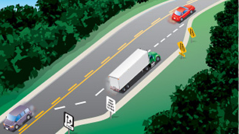
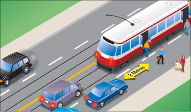

पदों में बदलाव
सड़क पर अपनी स्थिति बदलने में लेन बदलना या किसी अन्य वाहन को ओवरटेक करना शामिल है। शुरू करने से पहले, सुनिश्चित करें कि आपके पास यह कार्य सुरक्षित रूप से पूरा करने के लिए पर्याप्त जगह और समय है।
लेन बदलना
लेन बदलना एक ही दिशा में दो या दो से अधिक लेन वाली सड़कों पर एक लेन से दूसरी लेन में जाने की प्रक्रिया है। आपको किसी अन्य वाहन को ओवरटेक करने, किसी खड़ी गाड़ी से बचने या चौराहे पर मुड़ने के लिए आगे चल रहे वाहन के धीमा होने पर लेन बदलनी पड़ सकती है।
उचित संकेत दिए बिना और यह सुनिश्चित किए बिना कि लेन बदलना सुरक्षित है, कभी भी लेन न बदलें।
लेन बदलने के लिए ये चरण हैं:
- ट्रैफिक में ऐसी जगह ढूंढने के लिए अपने मिरर चेक करें जहां आप सुरक्षित रूप से प्रवेश कर सकें।
- लेन बदलते समय कंधे के ऊपर से देखकर अपने ब्लाइंड स्पॉट की जांच करें। साइकिल और अन्य छोटे वाहनों पर विशेष ध्यान दें। बाएं या दाएं मुड़ने के लिए सिग्नल दें।
- दोबारा जांच लें कि रास्ता साफ है और कोई भी पीछे से या बहु-लेन वाली सड़क पर दो लेन छोड़कर तेज गति से नहीं आ रहा है।
- धीरे-धीरे नई लेन में प्रवेश करें। गति धीमी न करें, गति को समान बनाए रखें या धीरे-धीरे बढ़ाएं।
कभी भी अचानक लेन बदलते समय किसी अन्य वाहन, यहां तक कि साइकिल के आगे से निकलने की कोशिश न करें। अन्य चालक आपसे अपेक्षा करते हैं कि आप अपनी वर्तमान लेन में ही रहें। यहां तक कि अगर आप सिग्नल देते हैं, तब भी वे आपसे अपेक्षा करते हैं कि आप उन्हें रास्ता दें।
अनावश्यक रूप से लेन बदलने या एक लेन से दूसरी लेन में जाने से बचें। इससे दुर्घटना होने की संभावना बढ़ जाती है, खासकर भारी यातायात या खराब मौसम में। चौराहे पर या उसके आस-पास लेन न बदलें। याद रखें कि किसी दूसरे वाहन के पीछे कुछ सेकंड रुकना अक्सर उसे ओवरटेक करने से ज्यादा सुरक्षित होता है।

आरेख 2-45
पासिंग
ओवरटेकिंग का मतलब है धीमी गति से चल रहे वाहन को ओवरटेक करने के लिए लेन बदलना। हालांकि सभी सार्वजनिक सड़कों पर गति सीमा होती है, लेकिन सभी वाहन एक ही गति से नहीं चलते। उदाहरण के लिए, साइकिल चालक, सड़क सेवा वाहन और आगे चल रहे वाहन जो मुड़ने की तैयारी कर रहे होते हैं, आमतौर पर सामान्य वाहनों की तुलना में धीमी गति से चलते हैं। जब आप धीमी गति से चल रहे वाहनों के पीछे चल रहे हों, तो आप उन्हें ओवरटेक करना चाह सकते हैं।
जब तक आपको पूरा यकीन न हो कि आप बिना खुद को या दूसरों को खतरे में डाले ऐसा कर सकते हैं, तब तक किसी अन्य वाहन को ओवरटेक न करें। किसी भी परिस्थिति में चलती हुई बर्फ हटाने वाली मशीनों को ओवरटेक न करें। यदि संदेह हो, तो ओवरटेक न करें।
किसी वाहन को ओवरटेक करने के लिए निम्नलिखित चरण हैं:
- ओवरटेक करने की इच्छा जताने के लिए अपने लेफ्ट-टर्न सिग्नल का इस्तेमाल करें और ओवरटेकिंग लेन में जाने से पहले यह सुनिश्चित कर लें कि आगे और पीछे का रास्ता साफ है।
- आगे निकलने से पहले, सामने छिपी हुई साइकिलों और छोटी गाड़ियों पर ध्यान दें। साथ ही, सामने से बाईं ओर मुड़ने वाली गाड़ियों और किसी अन्य सड़क या रास्ते से सड़क पर आने वाले वाहनों या पैदल यात्रियों पर भी ध्यान दें।
- लेन बदलते समय सिग्नल देना न भूलें। ओवरटेक करने के बाद, वापस अपनी लेन में आने का सिग्नल दें और जब आपको अपने अंदरूनी मिरर में आगे वाली गाड़ी का पूरा दृश्य दिखाई दे, तब लेन बदलें। ध्यान रखें कि अचानक आगे बढ़कर किसी वाहन को ओवरटेक करने की कोशिश न करें।
- अगर आप जिस वाहन को ओवरटेक कर रहे हैं, वह गति बढ़ा दे, तो उससे रेस न लगाएं। अपनी मूल लेन में वापस आ जाएं। और जब कोई दूसरा ड्राइवर आपको ओवरटेक करने की कोशिश कर रहा हो, तब भी गति न बढ़ाएं। यह गैरकानूनी और खतरनाक है।

आरेख 2-46
पैदल यात्री क्रॉसिंग के 30 मीटर के भीतर से गुजरना मना है। पुल, वायडक्ट या सुरंग से 30 मीटर की दूरी पर सेंटरलाइन के बाईं ओर से गुजरना मना है। पहाड़ी की चोटी के पास या मोड़ पर, जहां सामने से आ रहे वाहनों को देखना मुश्किल हो और सुरक्षित रूप से गुजरने के लिए पर्याप्त दूरी न हो, वहां से गुजरने का प्रयास न करें।
पार्क किए गए वाहनों के पास से गुजरते समय, अचानक दरवाजे खोलने वाले लोगों या सामान लादने और उतारने के लिए खोले गए दरवाजों पर ध्यान दें।
मोटरसाइकिल, साइकिल, सीमित गति वाली मोटरसाइकिल और मोपेड चलाने वालों को अक्सर खतरनाक सड़क स्थितियों से बचने या अन्य चालकों को दिखाई देने के लिए अपनी लेन के बाएँ या दाएँ किनारे हटना पड़ता है। इसे उसी लेन में आगे निकलने का न्योता न समझें। यदि आप इन वाहनों को ओवरटेक करना चाहते हैं, तो लेन बदलकर ही करें।
जब तेज़ गति से चलने वाला वाहन आपको ओवरटेक करना चाहे, तो दाईं ओर हट जाएं और उसे सुरक्षित रूप से आगे निकलने दें। जब आप किसी अविभाजित सड़क पर हों और ओवरटेक करने वाला चालक विपरीत लेन में चला गया हो, तो सामने से आ रहे वाहनों पर ध्यान दें और लेन के दाईं ओर थोड़ा और करीब आ जाएं। टक्कर से बचने के लिए ओवरटेक करने वाले चालक को जल्दी से आगे निकलने देने के लिए गति धीमी करने के लिए तैयार रहें।
कई तेज़ रफ़्तार वाली सड़कों पर, जहाँ प्रत्येक दिशा में तीन या उससे अधिक लेन होती हैं, ट्रकों को सबसे बाईं लेन में चलने की अनुमति नहीं होती है। इसका मतलब है कि उसके बगल वाली लेन ट्रकों के ओवरटेक करने की लेन है। यदि आप इस लेन में हैं और कोई ट्रक आपको ओवरटेक करना चाहता है, तो जितनी जल्दी हो सके दाईं लेन में चले जाएँ।

आरेख 2-47
रात में गुजरना
रात में अन्य वाहनों को ओवरटेक करते समय बहुत सावधान रहें। यदि ओवरटेक करना आवश्यक हो और रास्ता साफ हो, तो इन चरणों का पालन करें:
- जब आप पीछे से आ रहे किसी वाहन के पास पहुंचें तो अपनी हेडलाइट्स को लो बीम पर स्विच कर लें।
- सिग्नल दें, अपने मिरर और ब्लाइंड स्पॉट चेक करें, और ओवरटेक करने के लिए आगे बढ़ें। ओवरटेक करते समय, अपनी हाई बीम लाइट चालू कर दें। इससे आपको आगे का रास्ता बेहतर ढंग से दिखाई देगा।
- जब आपको अपने रियर व्यू मिरर में सामने वाली गाड़ी का पूरा अगला हिस्सा दिखाई दे, तो आप उससे इतनी दूरी पर हैं कि दाहिनी लेन में वापस आ सकते हैं। सिग्नल देना न भूलें।
ओवरटेकिंग और चढ़ाई वाली लेन

आरेख 2-48
कुछ सड़कों पर ओवरटेक करने या चढ़ाई करने के लिए विशेष लेन बनी होती हैं। इन लेन में धीमी गति वाले वाहन दाहिनी लेन में जा सकते हैं ताकि तेज गति वाले वाहन बाईं लेन में सुरक्षित रूप से आगे निकल सकें।
एक अग्रिम संकेत चालकों को सूचित करता है कि उन्हें जल्द ही आगे निकलने का मौका मिलेगा। एक अन्य संकेत लेन के समाप्त होने की चेतावनी देता है ताकि दाहिनी लेन में चल रहे चालक सुरक्षित रूप से बाईं लेन में चल रहे यातायात में शामिल हो सकें।
कंधे पर से गुजरना
आप केवल तभी दाहिने शोल्डर पर गाड़ी चला सकते हैं जब आपको बाएं मुड़ने वाले वाहन को ओवरटेक करना हो और वह भी तब जब शोल्डर पक्का हो। आप बाएं शोल्डर पर ओवरटेक नहीं कर सकते, चाहे वह पक्का हो या नहीं।
दाईं ओर से गुजरना
अधिकांशतः ओवरटेकिंग बाईं ओर से की जाती है। आप बहु-लेन या एक-तरफ़ा सड़कों पर और ट्राम या बाईं ओर मुड़ने वाले वाहन को ओवरटेक करते समय दाईं ओर से ओवरटेक कर सकते हैं।
दाईं ओर से ओवरटेक करना बाईं ओर से ओवरटेक करने से ज़्यादा खतरनाक हो सकता है। यदि आप सबसे बाईं लेन में गाड़ी चला रहे हैं और आपके आगे कोई धीमी गति से चलने वाला वाहन है, तो उस वाहन के दाईं ओर मुड़ने का इंतज़ार करें। अचानक लेन न बदलें और दाईं ओर से ओवरटेक न करें; हो सकता है कि आगे चल रहे ड्राइवर को पता चल जाए कि आप ओवरटेक करना चाहते हैं और वह भी उसी समय दाईं ओर मुड़ जाए।
गुजरती हुई रेलगाड़ियाँ

आरेख 2-49
यदि आप एकतरफा सड़क पर गाड़ी नहीं चला रहे हैं, तो आपको ट्राम को दाईं ओर से ही पार करना होगा।
ट्राम स्टॉप पर, यात्रियों के उतरने या चढ़ने वाले पिछले दरवाजों से कम से कम दो मीटर की दूरी बनाए रखें। यह नियम उन स्टॉप पर लागू नहीं होता जहां ट्राम यात्रियों के लिए अलग से जगह निर्धारित की गई हो। इन क्षेत्रों से हमेशा उचित गति से गुजरें और पैदल यात्रियों के अचानक या अप्रत्याशित रूप से हिलने-डुलने के लिए तैयार रहें।
सारांश
इस खंड के अंत तक, आपको निम्नलिखित बातें पता होनी चाहिए:
- लेन बदलते समय या ओवरटेक करते समय सुरक्षा संबंधी सावधानियां और अपनाई जाने वाली प्रक्रिया
- यात्रा करते समय (उदाहरण के लिए, रात में, रेलगाड़ी में) विशिष्ट स्थितियों से कैसे निपटा जाए